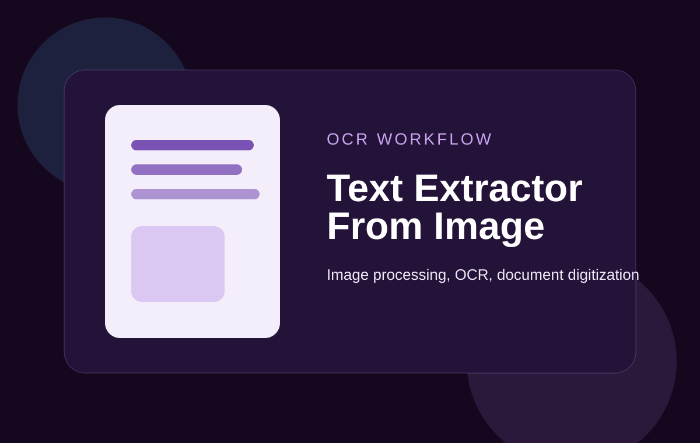

Role
Python Developer
OCR-focused project that converts image-based text into usable digital output for document workflows and data preparation.

Python Developer
OCR build
Improves image-to-text extraction for digital processing workflows.
This project supports OCR-oriented work by taking image content and transforming it into usable text. It fits document extraction, automation preparation, and text-processing workflows.